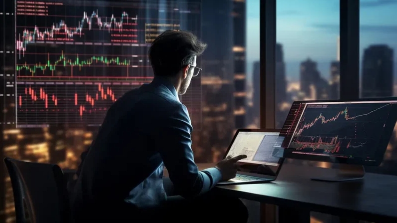

2.1. Mercado de Acciones
En el mercado de acciones, los inversores compran y venden participaciones de empresas. Las acciones representan propiedad parcial en una compañía, lo que da derecho a dividendos y votaciones (Johnson, 2020).
Más información:
Las bolsas de valores, como el NASDAQ y la Bolsa de Nueva York (NYSE), son los principales lugares donde se negocian las acciones. Los traders e inversores pueden comprar acciones para obtener una rentabilidad a través de los dividendos o la apreciación del precio de las acciones.
2.2. Mercado de Divisas (Forex)
El mercado Forex es el más grande y líquido del mundo, donde las monedas de diferentes países se intercambian en pares como EUR/USD o GBP/JPY (White, 2021).
Más información:
El mercado Forex está abierto 24 horas al día, cinco días a la semana, lo que ofrece flexibilidad a los traders. Factores como las políticas monetarias, tasas de interés y eventos internacionales influyen en las fluctuaciones de las divisas.
2.3. Mercado de Futuros
Los futuros son contratos que obligan a la compra o venta de un activo en una fecha futura por un precio previamente acordado (Green, 2018).
Más información:
Este mercado se utiliza tanto para la especulación como para la cobertura de riesgos. Los contratos de futuros pueden involucrar commodities, como petróleo, oro y productos agrícolas, o activos financieros, como índices bursátiles y bonos.
2.4. Mercado de Opciones
Las opciones son contratos que otorgan el derecho, pero no la obligación, de comprar o vender un activo a un precio específico antes de una fecha establecida (Taylor, 2020).
Más información:
Las opciones son utilizadas por traders para especular sobre la dirección de los precios o para proteger una cartera existente. A diferencia de los futuros, las opciones no requieren la compra o venta obligatoria del activo subyacente.
2.5. Criptomonedas y su Impacto en el Trading
Las criptomonedas, como Bitcoin y Ethereum, han transformado el panorama del trading, ofreciendo nuevas oportunidades de inversión y especulación (Carter, 2023).
Más información:
A pesar de su alta volatilidad, el mercado de criptomonedas atrae a traders debido a su potencial de generar ganancias rápidas. Sin embargo, también presenta riesgos elevados por su falta de regulación y la posibilidad de hackeos y fraudes.